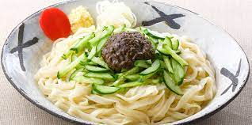
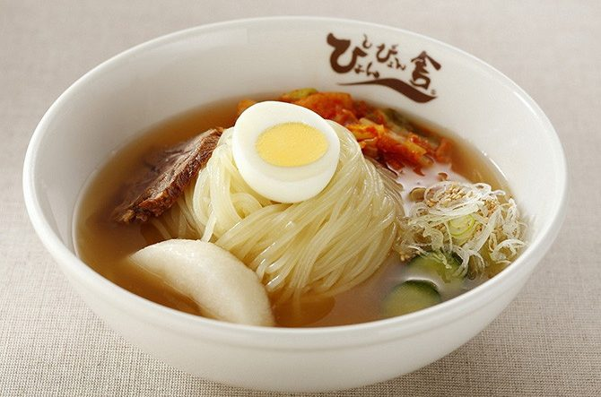

一言
ここのページでは岩手の魅力的な食べ物を紹介したいと思います

盛岡じゃじゃ麺は、わんこそば、冷麺と並んで「盛岡三大麺」と称される麺料理のひとつである。戦前、現在の中国東北部にあたる旧満州に移住していた後の白龍の初代主人である高階貫勝が、終戦後の盛岡で日本の食材を使って屋台を始め、そこで盛岡人の舌にあうようにアレンジをくりかえすうちに、「じゃじゃ麺」としての独特の形を完成させたといわれる。

盛岡冷麺は、岩手県盛岡市の名物麺料理。朝鮮半島の伝統料理・冷麺がアレンジされたものである。わんこそば、じゃじゃ麺と並んで「盛岡三大麺」と称されている。盛岡では一般的に「冷麺」というと盛岡冷麺を指す事が多く、公正取引委員会が承認する特産・名産麺料理10品目の中で唯一の冷製専用品目である。

わんこそば（椀こ蕎麦）は、岩手県（花巻、盛岡）に伝わる蕎麦（そば）の一種[1]。 熱いそばつゆをくぐらせた一口大のそばを客のお椀に入れ、それを食べ終わるたびに、給仕がそのお椀に次々とそばを入れ続け、それを客が満腹になりふたを閉めるまで続けるというスタイルが基本となっている。